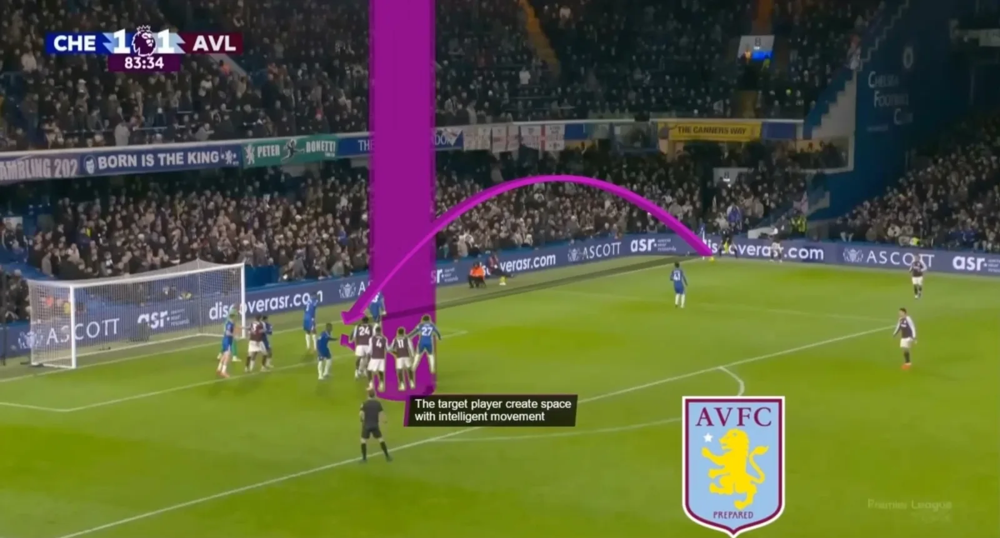
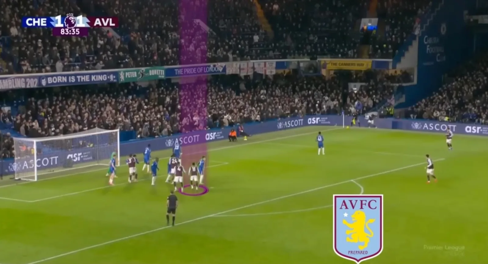
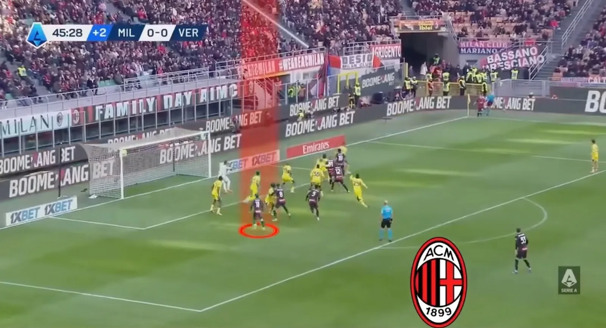
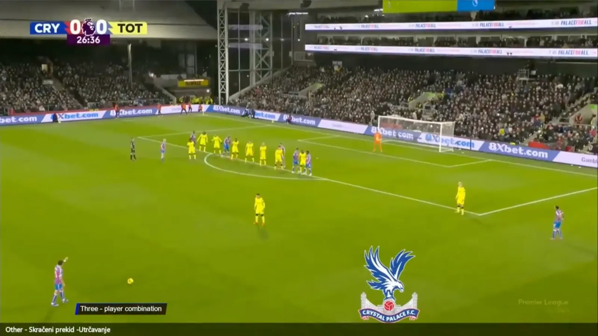
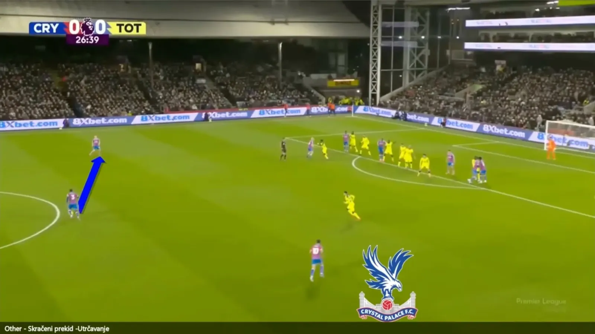
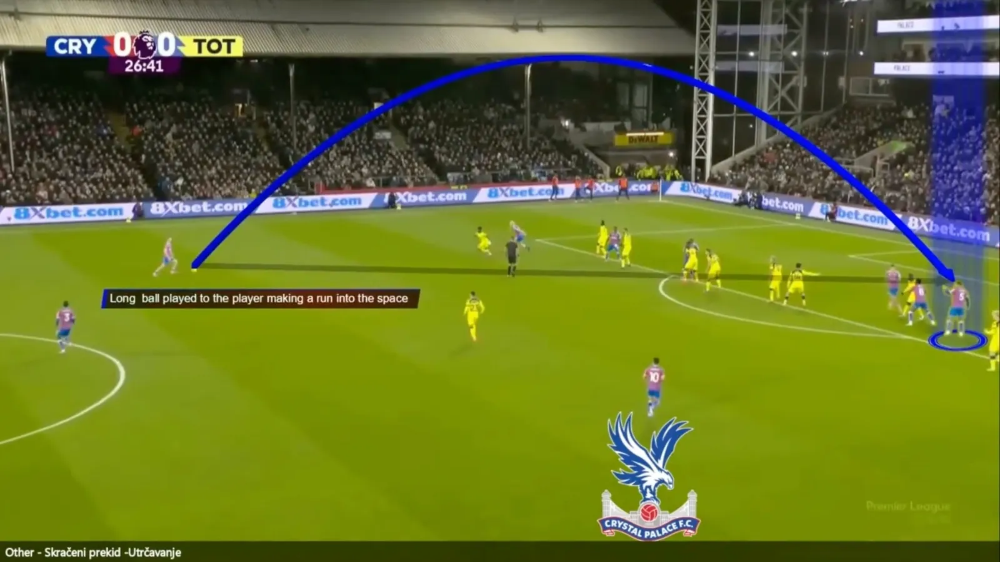
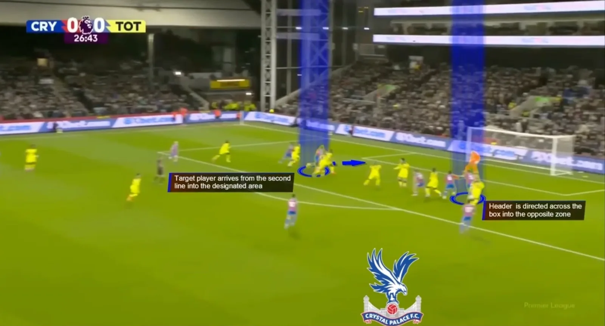

In modern football, there is a tendency to overcomplicate attacking set pieces. But the reality is often the opposite: the most effective routines are built on clarity, timing and coordination, not complexity.
Set pieces are one of the few moments in the game where everything can be controlled. Positions, movements, timing — every detail is predefined. Yet success doesn't come from adding more layers, but from executing simple ideas perfectly.
Occupy the box
What really makes the difference is how teams occupy the box. The best sides consistently attack the key zones — near post, central areas and far post — so that every delivery has multiple threats. It's not just about where the ball goes, but how many problems it creates for the defence at the same time.
Timing is everything
Runs that are too early get tracked. Runs that are too late miss the moment. But when movements are synchronised, even a simple delivery becomes extremely difficult to defend. One player attacks the near post, another arrives centrally and a third targets the far side, all coordinated to stretch the defensive line and create separation.


Second-line runs
Another key detail is the use of second-line runs. While defenders focus on the first wave of attackers, late arrivals often find space in the most dangerous areas. Combined with minimal touches and quick finishes, these situations turn low-risk deliveries into high-quality chances.

Example: a simple free-kick routine
Crystal Palace against Tottenham shows how few actions a good routine needs: a short combination, one run into space, one long ball and a header across the box.




Repeat clear patterns
At this level, it's not about surprising the opponent with complexity, it's about repeating clear patterns with precision. The more consistent the roles and movements, the harder it becomes for defenders to react in time.
Set pieces don't need to be complicated to be effective. They need to be well-timed, well-structured and well-executed. That's where the real advantage lies.